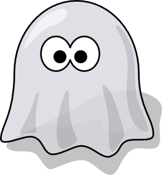

<! doctype html>
<html>
  <head>
  <style>
  img {
    width: 300px;
  }
  body{
    background-color: rgb(127,127,127);
  }
  </style>
  <title> Main Wrapper</title>
  <script src = "jsPsych-6.0.1/jspsych.js"></script>

  <script src = "jsPsych-6.0.1/plugins/jspsych-html-keyboard-response.js"></script>
  <script src = "jsPsych-6.0.1/plugins/jspsych-fullscreen.js"></script>
  <script src = "jsPsych-6.0.1/plugins/jspsych-fixation.js"></script>
  <script src = "jsPsych-6.0.1/plugins/jspsych-call-function.js"></script>
  <script src = "jsPsych-6.0.1/plugins/jspsych-association.js"></script>
  <script src = "jsPsych-6.0.1/plugins/jspsych-survey-text.js"></script>
  <script src = "jsPsych-6.0.1/plugins/jspsych-instructions.js"></script>
  <script src = "jsPsych-6.0.1/plugins/jspsych-RDK.js"></script>
  <script src = "jsPsych-6.0.1/plugins/jspsych-reward.js"></script>
  <script src = "jsPsych-6.0.1/plugins/jspsych-decision.js"></script>

  <script src = "jsPsych-6.0.1/pest.js"></script>
  <link href = "jsPsych-6.0.1/css/jspsych.css" rel = "stylesheet"></link>
  </head>
  <body>
    <div id="canvasesdiv" style="position:absolute;">
      <canvas id="layer1" style="z-index: 1;position:absolute;margin:auto;display:block;left:0px;top:0px;">
      </canvas>
      <canvas id="layer2" style="z-index: 2;position:absolute;margin:auto;left:0px;top:0px;">
      </canvas>
    </div>
  </body>
  <script>

    var canvas=document.getElementById("layer1");
  	var layer2=document.getElementById("layer2");
    var ctx=layer1.getContext("2d");
		var ctx2=layer2.getContext("2d");

    var currBalance=0; //global var to track participant's winnings thruout

    var a_list=[];
    var b_list=[];
    var c_list=[];
    var d_list=[];
    var cat_names=['butterflies','horses','guitars','chairs']
    var stim_cats=[8,15,37,40] //unused cats ,19,26,28,33,35,36
    var first_num=[1,2,3,4,5,6]
    var second_num=[1,2,3,4,5,6,7,8,9,10,11,12,13,14,15]
      for (var b=0;b<first_num.length;b++){
        for (var c=0;c<second_num.length;c++){
          a_list.push(stim_cats[0]+'_'+first_num[b]+'_'+second_num[c]) //butteflies
          b_list.push(stim_cats[1]+'_'+first_num[b]+'_'+second_num[c]) //horses
          c_list.push(stim_cats[2]+'_'+first_num[b]+'_'+second_num[c])//guitars
          d_list.push(stim_cats[3]+'_'+first_num[b]+'_'+second_num[c])//chairs

        }
      }

    console.log(a_list,b_list,c_list,d_list)
    var assoc_list_a=shuffle(a_list);
    var assoc_list_b=shuffle(b_list);
    var assoc_list_c=shuffle(c_list);
    var assoc_list_d=shuffle(d_list);

    var reward_list_a=shuffle(a_list);
    var reward_list_b=shuffle(b_list);
    var reward_list_c=shuffle(c_list);
    var reward_list_d=shuffle(d_list);

		//console.log(ctx2)
var dist; //global variable for participants' self-reported distance from monitor
var cmPer200Px; //self-reported measured cm for 200 px black bar image
var deg_per_px; //global for calculated px per degree
      var vd_calib={
        type: 'survey-text',
        preamble:"<p>We need to calibrate the experiment to your computer monitor.  Please answer the following questions by inputting a number into each box.</P>"+
        "<P>Press continue when finished (Note: Pressing continue will not advance the experiment until numbers are entered below):</p>"+
            "<p><font color='red'>Please use a ruler or other measuring instrument if available.  Otherwise please make your best estimate (Note that 1 inch = ~2.5 cm). </font></p>",
        questions:[
          {prompt: 'How many centimeters (cm) is your face from your computer monitor?', value: 'cm', rows:1, columns:3},
          {prompt: "<p>How many centimeters (cm) does this black bar measure on your screen?</p>"+
                    "<div style='float: center;'></img>", value: 'cm', rows:1,columns:3},

        ],
        on_finish: function(){
          var str=jsPsych.data.get().select('responses').values[jsPsych.data.get().select('responses').values.length-1]
          dist=parseFloat(str.slice(str.indexOf('Q0')+5,str.indexOf('Q1')-3))//pulls first response from response string
          cmPer200Px=parseFloat(str.slice(str.indexOf('Q1')+5))//pulls second response from response string
          deg_per_px = (Math.atan2(.5*cmPer200Px, dist) / (.5*200))*180/Math.PI;
          console.log(20/deg_per_px)

        },


      }
      var vd_calib_ifApertureTooBig={
        type: 'survey-text',
        preamble:"<p><font color=red>The experiment will not fit on your screen at your current viewing distance.</P>"+
        "<p>Please move closer to your computer screen and reinput your viewing distance. A reasonable viewing distance is around 60cm. </font>"+
        "<P>Press continue when finished (Note: Pressing continue will not advance the experiment until numbers are entered below):</p>"+
            "<p><font color='red'>Please use a ruler or other measuring instrument if available.  Otherwise please make your best estimate (Note that 1 inch = ~2.5 cm). </font></p>",
        questions:[
          {prompt: 'How many centimeters (cm) is your face from your computer monitor?', value: 'cm', rows:1, columns:3},
          {prompt: "<p>How many centimeters (cm) does this black bar measure on your screen?</p>"+
                    "<div style='float: center;'></img>", value: 'cm', rows:1,columns:3},

        ],
        on_finish: function(){
          var str=jsPsych.data.get().select('responses').values[jsPsych.data.get().select('responses').values.length-1]
          dist=parseFloat(str.slice(str.indexOf('Q0')+5,str.indexOf('Q1')-3))//pulls first response from response string
          cmPer200Px=parseFloat(str.slice(str.indexOf('Q1')+5))//pulls second response from response string
          deg_per_px = (Math.atan2(.5*cmPer200Px, dist) / (.5*200))*180/Math.PI;
          console.log(deg_per_px)

        },


      }

      var size_chill=false;
      var calib_if_node={
        timeline:[vd_calib_ifApertureTooBig],
        conditional_function:function(){
          var currAptHeight=Math.round(20/deg_per_px);
          var currViewHole=window.outerHeight;
          if (currAptHeight>currViewHole){
            size_chill=false;
            return true
          }else{
            size_chill=true;
            return false
          }
        }
      }
      var calib_loop_if={
      timeline:[calib_if_node],
      loop_function:function(){
        if(size_chill==false){
          return true
        }else{
          return false

        }
        }
      }
      var calib_loop_timeline={
        timeline:[vd_calib,calib_loop_if],
        loop_function: function(){

          if (isNaN(deg_per_px)){
            return true
          }else{
            return false
          }
        },
      }

      var fixation_block={
        type:'fixation',
        fixation_cross_color:"red",
        trial_duration:1000,
        background_color: 'rgb(255,255,255)',
      }
      var trialCounter=0;
      var randPos=[0,1,2,3];
      var imageset={
        image1: 'jsPsych-6.0.1/stimuli/vince_stimuli/' + assoc_list_a[trialCounter] +'.png',
        image2:'jsPsych-6.0.1/stimuli/vince_stimuli/' + assoc_list_b[trialCounter] +'.png',
        image3:'jsPsych-6.0.1/stimuli/vince_stimuli/' + assoc_list_c[trialCounter] +'.png',
        image4:'jsPsych-6.0.1/stimuli/vince_stimuli/' + assoc_list_d[trialCounter] +'.png',

      }
      var main_trial={
        type:'association',
        trial_duration:4500,
        response_ends_trial:false,
        coherent_direction:jsPsych.timelineVariable('coherent_direction'),
        coherence:1.0,
        move_distance:7,
        number_of_dots:400,
        aperture_width:window.innerWidth,
        aperture_height:window.innerHeight,

        aperture_type:4,
        fixation_cross:true,
        border:false,
        choices: [37,38,39,40],
        on_finish: function(){
          trialCounter=trialCounter+1;
          var pos=[0,1,2,3];
          randPos=shuffle(pos);
          var stim_sel=[assoc_list_a[trialCounter],assoc_list_b[trialCounter],assoc_list_c[trialCounter],assoc_list_d[trialCounter]]
          imageset.image1='jsPsych-6.0.1/stimuli/vince_stimuli/' + stim_sel[randPos[0]] +'.png';
          imageset.image2='jsPsych-6.0.1/stimuli/vince_stimuli/' + stim_sel[randPos[1]] +'.png';
          imageset.image3='jsPsych-6.0.1/stimuli/vince_stimuli/' + stim_sel[randPos[2]] +'.png';
          imageset.image4='jsPsych-6.0.1/stimuli/vince_stimuli/' + stim_sel[randPos[3]] +'.png';
          console.log(imageset)
        }
      }

  /*    var reward_imageset={
        image1: 'jsPsych-6.0.1/stimuli/vince_stimuli/' + assoc_list_a[trialCounter] +'.png',
        image2:'jsPsych-6.0.1/stimuli/vince_stimuli/' + assoc_list_b[trialCounter] +'.png',
        image3:'jsPsych-6.0.1/stimuli/vince_stimuli/' + assoc_list_c[trialCounter] +'.png',
        image4:'jsPsych-6.0.1/stimuli/vince_stimuli/' + assoc_list_d[trialCounter] +'.png',

      }*/

  /*    var reward_trial = {
        type: 'reward',
        stimulus: 'img/happy_face_1.jpg',
        choices: [37,39],
      //   prompt: '<p>Which image will you bet on? (Left or Right Arrow)</p>',
        response_ends_trial: true,
      }*/
      var a_idx=0;
      var b_idx=0;
      var c_idx=0;
      var decision_trial = {
        type: 'decision',
        trial_duration:4500,
        number_of_apertures:2,
        response_ends_trial:false,
        number_of_dots:[200,200],
        coherent_direction:jsPsych.timelineVariable('coherent_direction'),//[0,90],
        coherence:1.0,
        move_distance:7,
        aperture_width:300,
        aperture_height:300,
        aperture_center_x:[window.innerWidth/2-250,window.innerWidth/2+250],
        aperture_center_y:[window.innerHeight/2-100,window.innerHeight/2-100],
        aperture_type:4,
        fixation_cross:false,
        border:true,
        response_ends_trial:false,
        choices: [37,38,39,40],
      //  on_finish:function(){decisionTrialCounter=decisionTrialCounter+1;}

      }

      var reward_trial = {
        type: 'reward',
        trial_duration:4500,
        number_of_apertures:2,
        response_ends_trial:false,
        number_of_dots:[200,200],
        coherent_direction:jsPsych.timelineVariable('coherent_direction'),//[0,90],
        coherence:1.0,
        move_distance:7,
        aperture_width:300,
        aperture_height:300,
        aperture_center_x:[window.innerWidth/2-250,window.innerWidth/2+250],
        aperture_center_y:[window.innerHeight/2-100,window.innerHeight/2-100],
        aperture_type:4,
        fixation_cross:false,
        border:true,
        response_ends_trial:false,
        choices: [37,38,39,40],
        on_finish:function(){rewardTrialCounter=rewardTrialCounter+1;}

      }
      function repeat_array(reps,array){
      var arr= []
      for (var i=0; i < reps ;i++){
        arr.push(array);
      }
      return arr
    }
    function repeat_number(reps,number){
    var arr=[];
    for (var i=0; i < reps ;i++){
  //    for (var a=0;a<array.length;a++){
        arr.push(number);
      //  arr.push(1);
    // }
    //  console.log(arr)
    }
    return arr
  }
    function shuffle(a) {
        var j, x, i;
        var newArray
        newArray=a;
        for (i = a.length - 1; i > 0; i--) {
            j = Math.floor(Math.random() * (i + 1));
            x = a[i];
            newArray[i] = a[j];
            newArray[j] = x;

    }
    return newArray
    }//shuffle


///more modern perhaps

    var introduction_instructions={
      type:'instructions',
      pages:["Your browser must be in fullscreen mode for this experiment to display properly.  "+
      "If your browser window is not in fullscreen mode, please press F11.  "+
      "After entering fullscreen mode, please refresh the window (press F5).  "+
      "Once you have freshly loaded this screen in fullscreen mode, press continue to begin.",
      "This experiment has 3 phases.  During the first phase you will have the opportunity to win extra money.  "+
      "During the second phase, you will try to avoid losing that extra money.  "+
      "During the third phase, you will have the opportunity to try and win any lost extra money back (as well as hopefully earn some more).  "+
      "At the end of the experiment, you may keep any winnings up to $1.00.  "+
    "Instructions on how to claim your winnings will be given at the end of the experiment.",
    "These winnings are only in addition to your base pay of which you are entitled ($2.00 for completion of the experiment).  If you finish with negative winnings this will not subtract from your guaranteed $2.00. "],
    show_clickable_nav:true,
    allow_keys:true,
    button_label_next: 'Continue',

    }
    var end_if_win={
      type:'instructions',
      pages:function(){return["Congratulations!  You finished with $"+parseFloat(currBalance).toFixed(2)+" in bonus winnings.  "+
            "Send an email to uclaqualialab@gmail.com with your worker ID to claim your extra money! Thank you for your participation."]},
        show_clickable_nav:true,
        allow_keys:true,
        button_label_next: 'Continue',
    }
    var end_if_lose={
      type:'instructions',
      pages:["Sorry you did not finish with any extra winnings.  Thank you for your participation!"],
      show_clickable_nav:true,
      allow_keys:true,
      button_label_next: 'Continue',
    }
    var win_if_node={
      timeline:[end_if_win],
      conditional_function:function(){
        if (currBalance>0){
          return true;
        }else{
          return false;
        }
      }
    }
    var lose_if_node={
      timeline:[end_if_lose],
      conditional_function:function(){
        if (currBalance>0){
          return false;
        }else{
          return true;
        }
      }
    }


          var association_instructions_block = {
            type: "instructions",
            pages: ["In this portion of the experiment, you will view 4 categories of images presented on top of a series of moving dots.  "+
            "Each trial you have the ability to earn money by selecting the correct image.  "+
            "For each direction of dot movement, selection of the correct picture will earn you money.  "+
            "Selection of the wrong category will not earn you money (though none will be lost either).  "+
            "Feedback will pop up on the screen indicating the result of your selection.  ",
            "The images will displayed at the left, top, right, and bottom of the screen.  "+
            "Make your selection with the appropriate arrow key on your keyboard.  ",
            "Press the continue button or the right arrow key on your keyboard when you are ready to begin.  "+
            "Have some fun and earn some money!"
          ],
          show_clickable_nav:true,
          allow_keys:true,
          button_label_next: 'Continue',

}

var reward_instructions_block = {
  type: "instructions",
  pages: function(){return["Congratulations! Your current winnings are $"+parseFloat(currBalance).toFixed(2)+"!  Press continue or the right arrow key to continue to the next phase of the experiment.",
  "In this next part of the experiment, you will be placing bets on two alternative displays of moving dots.  ",
  "Every trial, there is one winning moving dot display and one losing dot display.  "+
  "Selecting the losing display will result in a loss of money from your earnings in the previous portion of the experiment.  "+
  "Selecting the winning display will means no money is taken from your current balance.  ",
  "Your winnings can only go down in this portion of the experiment so do your best to hold onto them!  ",
  "Also, a bet-stealing ghost has been set loose for this portion of the experiment.  "+
  "<div style='float: center;'>'</img>"+
  "Sometimes he will pop up and make your bet for you.  Look out for him!",

  "Press the continue botton or the right arrow key on your keyboard when you are ready to begin."

]},
show_clickable_nav:true,
allow_keys:true,
button_label_next: 'Continue',

}

var decision_instructions_block = {
  type: "instructions",
  pages: ["In this final part of the experiment, you will again be betting between images:  sometimes dot displays, sometimes natural images.  ",
  "This time, no feedback will be displayed on the success or failure of your bet.  "+
  "A tally will be kept of your winnings and you will be notified of how to claim them after the experiment.",
  "Have some fun and earn some money!  Press the continue button or the right arrow key on your keyboard when you are ready to begin. "

],
show_clickable_nav:true,
allow_keys:true,
button_label_next: 'Continue',

}
       function makeAllTrialTypes(trialArray){
         var newArray=[];
         for (var i=0; i<trialArray.length; i++){
           for (var t=0; t<trial_types.length; t++){
             var tempTrial=Object.assign({},trialArray[i]);
             tempTrial.trial_type=trial_types[t];
             newArray.push(tempTrial);
           }
         }
       return newArray
       }

       function interleavePostTrialBlocks(trialArray){
         var newArray=[];
         for (var i=0;i<trialArray.length;i++){
           newArray.push(trialArray[i],response1,response2,response3,intensity_update)
         }
         return newArray
       }
       function insertMiddleBreak(trialArray,break_block){
         midIdx=Math.floor(trialArray.length/2);
         trialArray.splice(midIdx,0,break_block)
         return trialArray
       }


       var break_block={
         type: 'html-keyboard-response',
         stimulus: "Feel free to take a break for up to 60s.  Press any key to continue.  The experiment will resume automatically in 60s if no key is pressed.",
         choices: jsPsych.ALL_KEYS,
         trial_duration: 60000,
         response_ends_trial: true,


       }

       //var trialBones=[test_block_1,test_block_2,test_block_3,test_block_4]
      // var allTrialTypes=makeAllTrialTypes(trialBones)
       //var trialsArray=jsPsych.randomization.repeat(allTrialTypes,5)
       //var allTrials=interleavePostTrialBlocks(trialsArray);
       //var allTrials=insertMiddleBreak(allTrials,break_block);


    //  var main_test_procedure={
      //   timeline: allTrials,

       //}


       timeline=[]
       var reward_timeline_vars=[{coherent_direction: [0,90]},{coherent_direction: [0,180]},{coherent_direction:[0,270]},
       /*{coherent_direction:[90,180]},{coherent_direction:[90,270]},*/{coherent_direction:[90,0]},
       {coherent_direction:[180,0]},//{coherent_direction:[270,90]},
       {coherent_direction:[270,0]}]//,{coherent_direction:[180,90]},{coherent_direction:[270,180]},{coherent_direction:[180,270]}]


       var cat_names=['butterflies','horses','guitars']

       var decision_timeline_vars=[{coherent_direction: [0,90]},{coherent_direction: [0,180]},
       {coherent_direction:[90,180]},{coherent_direction:[90,0]},
       {coherent_direction:[180,0]},
      {coherent_direction:[180,90]},
      {coherent_direction:['butterflies','horses']},{coherent_direction:['butterflies','guitars']},
             {coherent_direction:['horses','guitars']},
             {coherent_direction:['horses','butterflies']},{coherent_direction:['guitars','butterflies']},
             {coherent_direction:['guitars','horses']}]

       //only safe cond: {coherent_direction:[90,180]},,{coherent_direction:[180,90]},,{coherent_direction:[270,180]},{coherent_direction:[180,270]}

       var trials2Win=repeat_number(96,0)
       var lossTrials=repeat_number(24,1)
       var trials2Lose=lossTrials.concat(trials2Win)
       //console.log(trials2Lose)
       trials2Lose=shuffle(trials2Lose);
       console.log(trials2Lose);
       var rewardTrialCounter=0;
        var association_test_procedure={
         timeline:[main_trial],
         timeline_variables:[{coherent_direction: '0'},{coherent_direction:'180'}],
         randomize_order: true,
         repetitions:60,//do 60
       }

       var reward_test_procedure={
         timeline:[reward_trial],
         timeline_variables: reward_timeline_vars,
         randomize_order:true,
         repetitions:20,//20*6=120 trials
       }
       var decision_test_procedure={
         timeline:[decision_trial],
         timeline_variables: decision_timeline_vars,
         randomize_order:true,
         repetitions:8//8*12=96 trials
       }

    /*   timeline.push({
         type: 'fullscreen',
         fullscreen_mode: true
       })*/
    //  timeline.push(calib_loop_timeline,iso_instructions_block,fixation_block,iso_test_procedure,iso_debrief_block)
      //timeline.push(main_instructions_block,fixation_block,initialize_staircases,main_test_procedure,break_block,main_test_procedure)
  //    timeline.push(association_test_procedure)
      //timeline.push(decision_test_procedure)
//      timeline.push(reward_test_procedure)
      timeline.push(introduction_instructions,association_instructions_block,association_test_procedure,reward_instructions_block,reward_test_procedure,decision_instructions_block,decision_test_procedure,win_if_node,lose_if_node)
      jsPsych.init({
        timeline:timeline,
        on_finish: function(){
          jsPsych.data.get().localSave('csv','pilot4Cody.csv'); //Save the data locally in a .csv file

          jsPsych.data.displayData();}
      })


      </script>
      </html>
